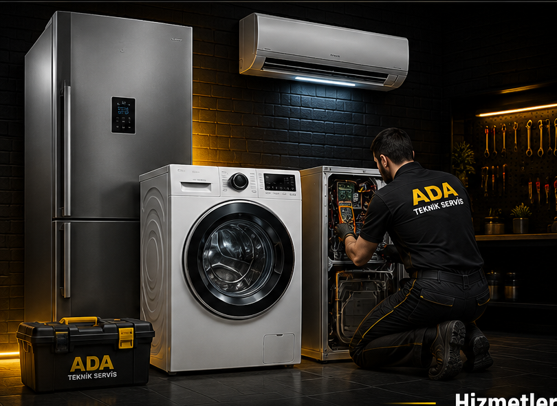

Fethiye Beyaz Eşya Teknik Servis Hizmeti
Fethiye ve çevresinde buzdolabı, çamaşır makinesi, bulaşık makinesi, klima, TV ve elektronik cihazlarınız için hızlı ve güvenilir teknik servis hizmeti sunuyoruz.
Fethiye Beyaz Eşya Servisi
Ada Teknik Servis olarak Bursa'nın Fethiye bölgesinde beyaz eşya ve elektronik cihazlarınız için teknik servis ve tamir hizmeti veriyoruz. Arızalanan cihazlarınız için yerinde servis hizmetimizden yararlanabilirsiniz.
Buzdolabı Tamiri
Buzdolabınız soğutmuyor, yeterince soğutmuyor, ses yapıyor veya su akıtıyorsa arıza tespiti ve onarım hizmeti sunuyoruz.
Detaylı Bilgi →Çamaşır Makinesi Tamiri
Çamaşır makineniz çalışmıyor, su almıyor, su boşaltmıyor, sıkma yapmıyor veya programı tamamlamıyorsa servis hizmeti veriyoruz.
Detaylı Bilgi →Bulaşık Makinesi Tamiri
Bulaşık makineniz su almıyor, su boşaltmıyor, iyi yıkamıyor veya programı tamamlamıyorsa arıza tespiti ve tamir hizmeti sunuyoruz.
Detaylı Bilgi →Klima Servisi
Klima bakım, arıza tespiti, gaz işlemleri ve gerekli teknik onarım hizmetlerini gerçekleştiriyoruz.
Detaylı Bilgi →TV ve Elektronik Tamiri
TV ve çeşitli elektronik cihazlarınızda meydana gelen arızalar için teknik servis desteği sağlıyoruz.
Detaylı Bilgi →Anakart Tamiri
Beyaz eşya elektronik kart ve anakart arızalarında arıza tespiti ve onarım hizmeti sunuyoruz.
Detaylı Bilgi →Fethiye'de Hizmet Verdiğimiz Bölgeler
Fethiye ve çevresinde yerinde beyaz eşya teknik servis hizmeti sunuyoruz.
Fethiye İçinde Servis
Fethiye ve çevre mahallelerine yerinde servis hizmeti.
Yerinde Arıza Tespiti
Cihazınızın arızasını yerinde kontrol ediyoruz.
Deneyimli Teknik Servis
Beyaz eşya ve elektronik cihazlarda teknik destek.
Garantili Onarım
Yapılan işlemlerde güvenilir ve kaliteli hizmet.
Fethiye, Akpınar, Çalı, Emek, Gülbahçe, Hürriyet, İhsaniye, Küplüpınar, Panayır, Soğanlı, Sırameşeler ve çevre bölgelerde servis hizmeti sağlıyoruz.
Fethiye Beyaz Eşya Servisi İletişim
Beyaz eşyanız arızalandıysa Ada Teknik Servis'e hemen ulaşabilirsiniz.